Sesia Down to the Campsite and Mollia Rapid
L’indecisione è la chiave della flessibilità
|
|
|
Sesia Down to the Campsite and Mollia Rapid |
||
|---|---|---|---|---|
|
L’indecisione è la chiave della flessibilità
|
Sesia Down to the Campsite
On the second day of boating, the team headed out to run the section of the Sesia from somewhere upstream of the campsite down to the campsite. The somewhere in question was the put-in known as the Roman Bridge.
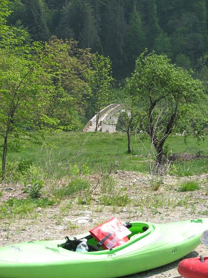
There are lots of these massively constructed feats of engineering around these parts. Indestructible, built to take lots of weight, big enough to take many people at one go, and designed to take you from here to there without interacting with the river in any way. But enough about creek boats... check out the Roman Bridge in the background.
At this stage we've teamed up with two Americans - Christie here on the left waits with Simon and Tom for the shuttle. Christie paddles in Oregon and was in Italy for the upcoming Teva Race. She's sitting off to one side because the boys' thermals are already humming a tune after just one day.
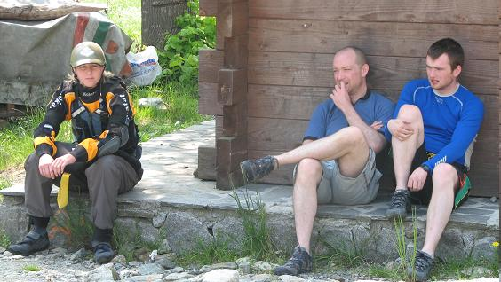
At the put-in immediately above the bridge Tom stretches out for the warm-up ferry glide.
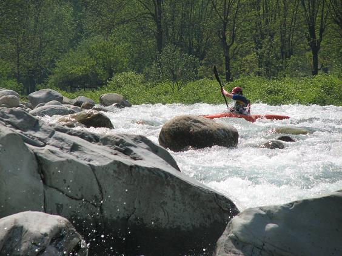
Here he is pushing across the flow avoiding a hole that threatened to put him offline. Don't you love the colour of Alpine river water?
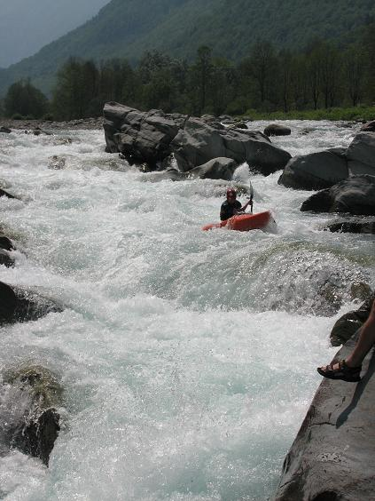
Here's Mick driving through the hole at the bottom. It's a nice little rapid to wake you up right at the beginning, or you can put in below it if the 'all-day-in-the-car-makes-me-lazy' bug has kicked in.
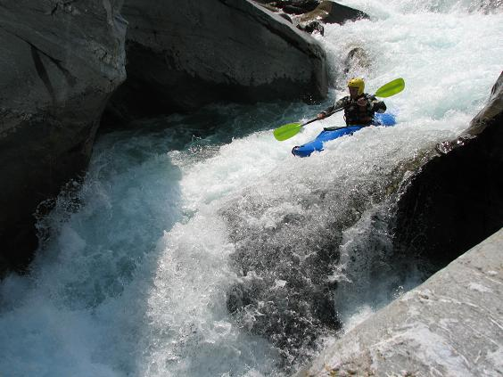
Mick is on a set of splits already after a shallow river rolling incident the previous day.
Jim boofs away from the little hole. If only all his boof strokes were like this.
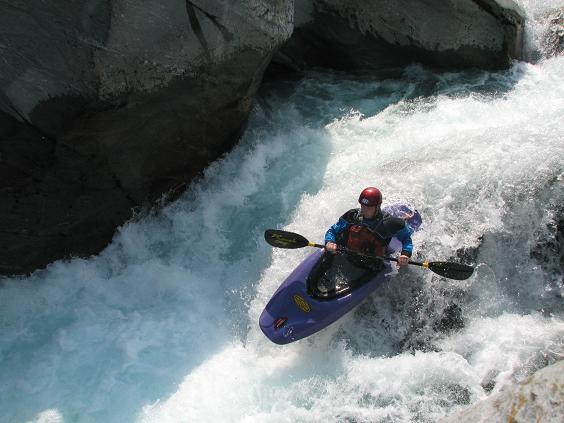
Here's the team portaging something or other. I can't quite recall what, but I remember it was an autoportage - one of those where a cursory glance tells you all you need to know about walking it. The guy at the bottom receiving the boat is Austin, the other half of the Oregon duo. He paddles the red thing in the background, which is the biggest boat in all Christendom. I think it was built by Harland and Wolff in Belfast.
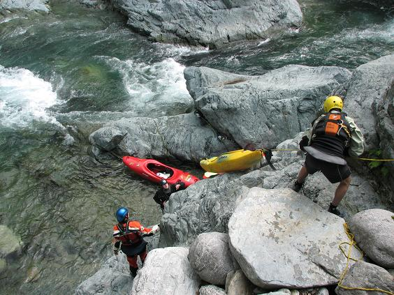
Tom strikes a pose; there's nothing to it. He says if you watch the pros, you will see how they always have one foot straight out and the other offset at roughly 90 degrees, accompanying knee slightly bent. He said that if he wasn't hampered by the paddle, he'd have his right hand on his hip. More of Tom's Top Tips later.
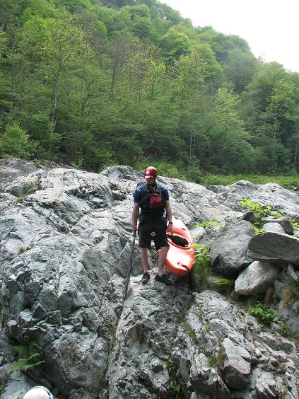
Der Kommandant says "This frivolity must end. I order it to stop." The frivolity duly stops, and das Boot ploughs vorw�rts...
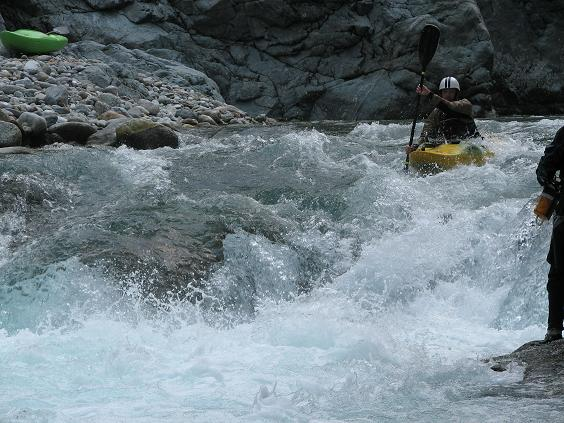
...into a depth charge. Now he is kommandant of a U-boot...
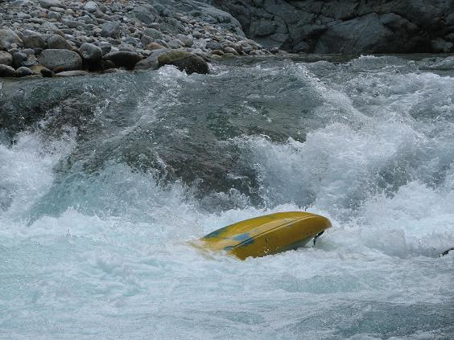
Catherine, too, seems unimpressed with the continuing frivolity of this trip report. Kayaking is a very serious business. Get on with it.
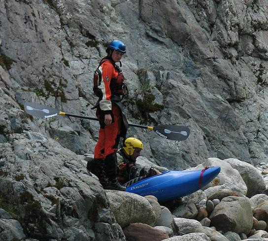
A very serious business...
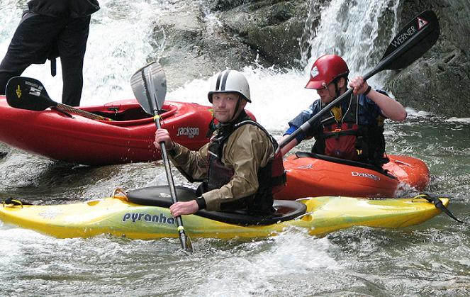
With group discipline restored, Mick works the magic...
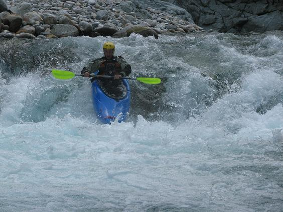
Catherine seems a lot happier now.
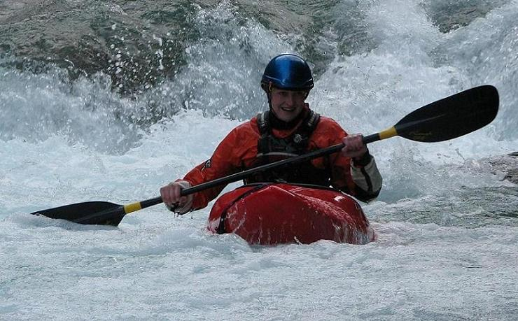
Mollia Rapid on the Sesia
About two-thirds of the way down this stretch there's a rapid known as Mollia Rapid. It's a fun little section linking a couple of distinct drops, all quite close on top of each other. It's easily scouted and portaged on the left.
The easiest way to set protection at the bottom is to get Austin to run it first. Here he is at the top having run the first little drop, lining up for the shallow slide into the twin little drop, then track right for a slide into a hole, some whiteness going on there, and another hole...
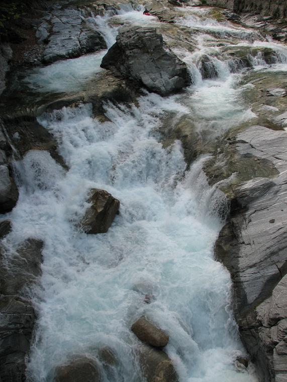
...before out at the bottom, storming under the bridge, making it look easy...
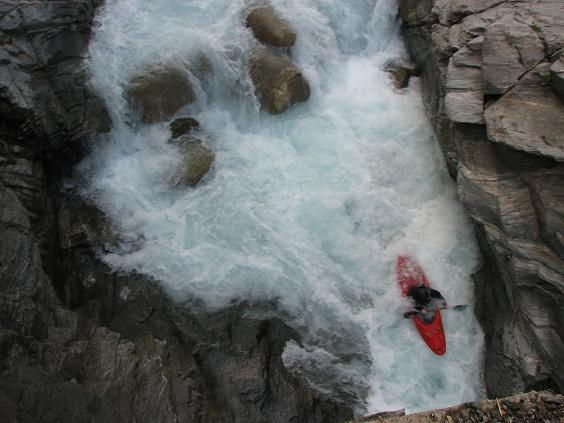
Next up � Tom, mentally rehearsing his line. What a pro.
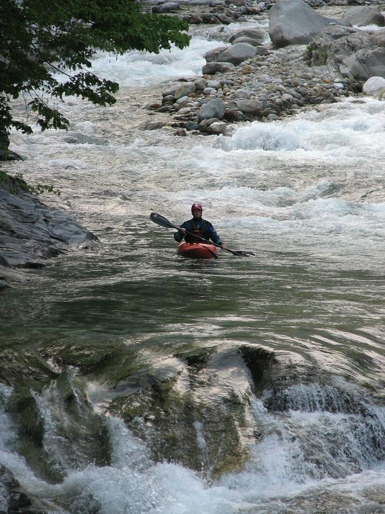
Tom looks for his entry line to the slide...
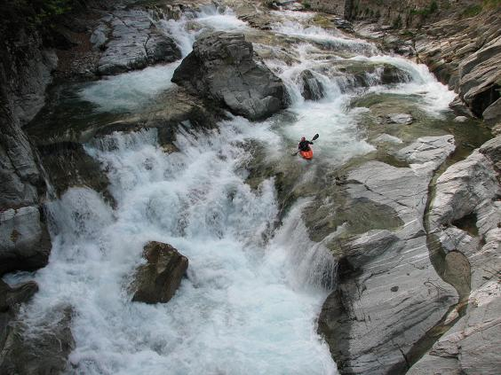
No problems at the run in to the last drop...
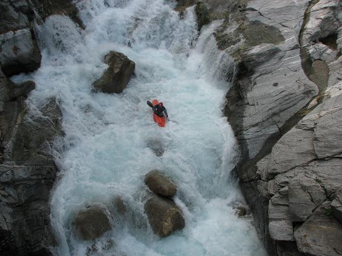
Mick having a great day, back from retirement.
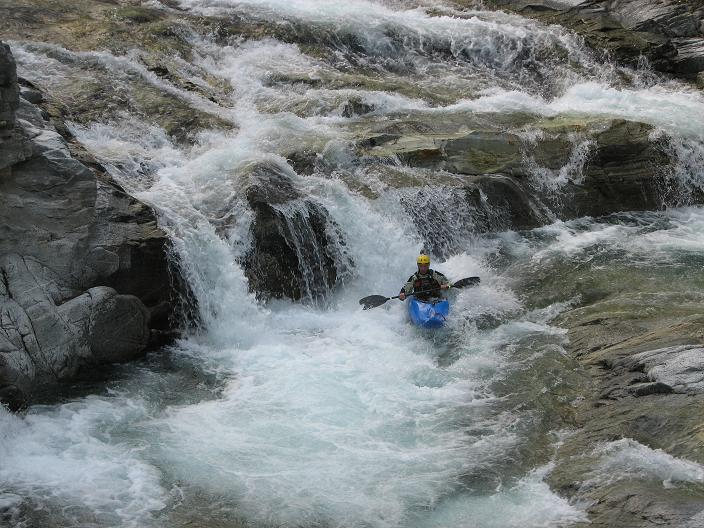
Mick takes a different tack to Tom, with equal success.
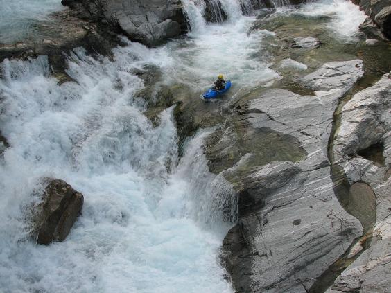
Jim tries a similar line. It's funny how if you're further back the queue, you tend to take similar lines to the successful ones you've just seen. Who says kayakers can't learn new tricks?
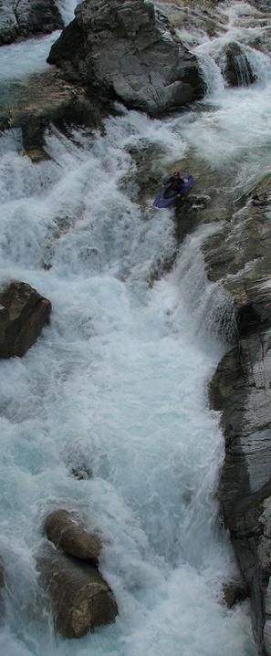
A little too much sky action, perhaps.
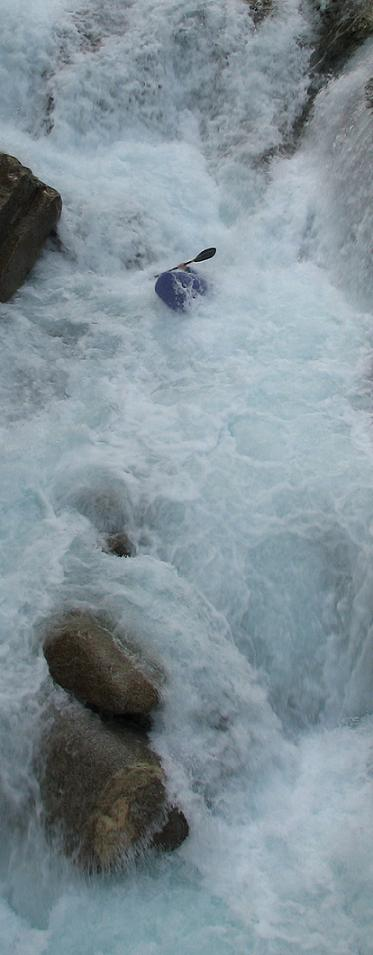
There's that protection of which we spoke earlier. Mick goes past Austin at the bottom.
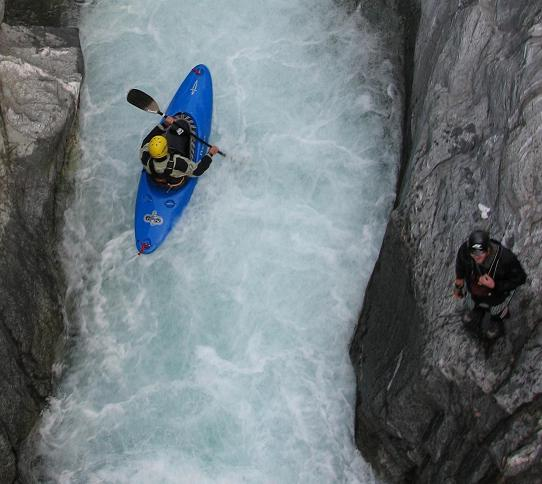
Tom waits at the bottom as Mick arrives. Eagle-eyed viewers will see how this photo and the last one are in fact from the same frame, just cropped differently. All part of the amazing MananaManana multimedia extravaganza...
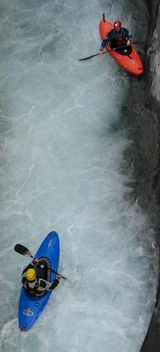
If this new photo messing is at all annoying, be sure to let us know...
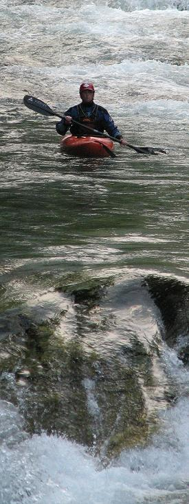
Immediately below this section there�s a cool short gorge, where drops arrive one on top of another for a 100 metres or so. We have no photos for this day�s run, due to the boom boom boom nature of the section. The following day, however, there would be photos and swimming�
Below that, it's all smiles to the campsite.